Project 04
Frozen Palace
The Frozen Fountain is a brewery and spa that mimics the flow of a pouring waterfall through its facade and circulation. The project features a space frame roof truss and cascading levels that accentuate the stellar views, with the building's wave-like roof formed by an exploded space-frame structure.

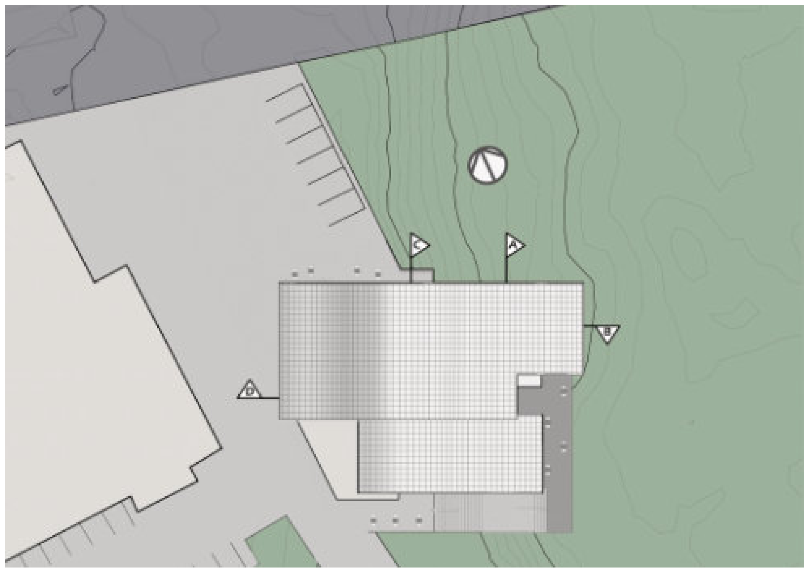
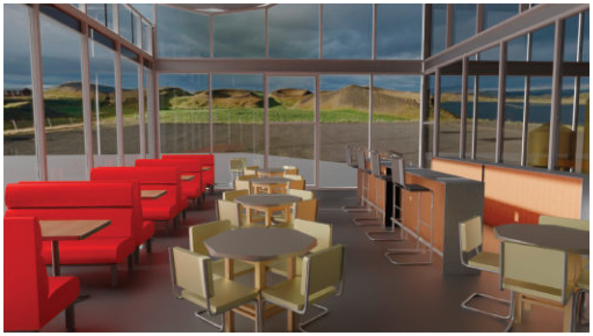
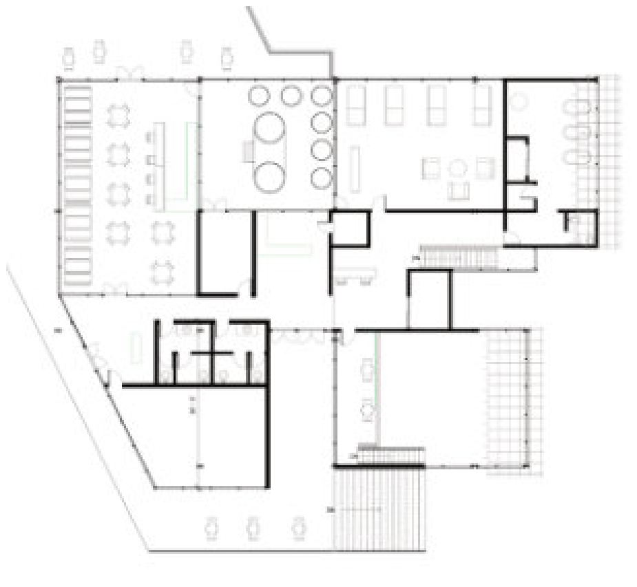
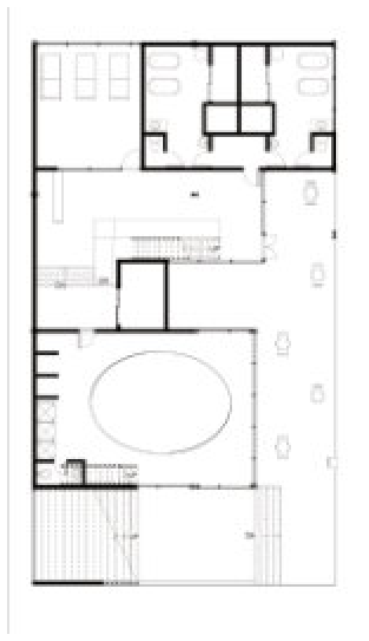
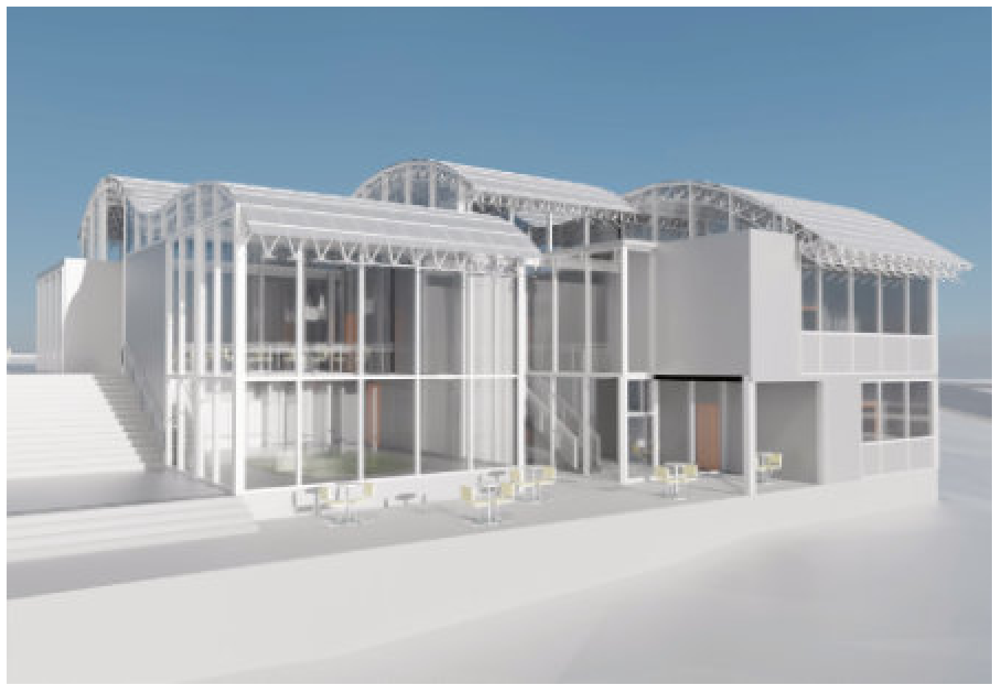
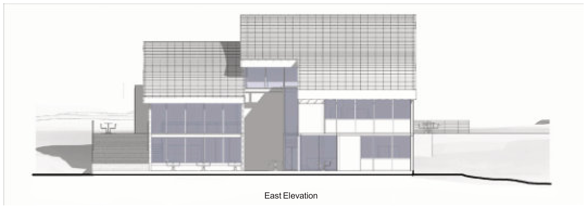
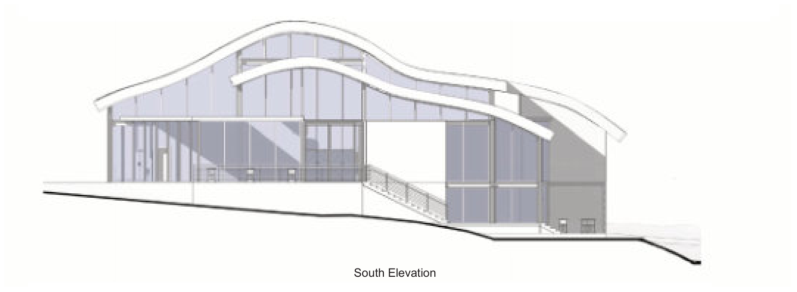
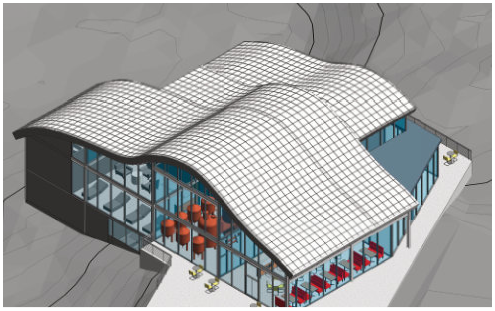
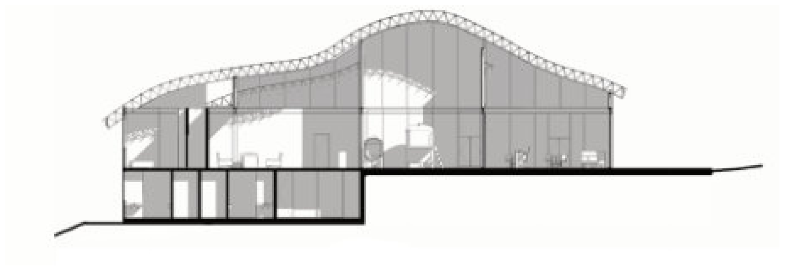
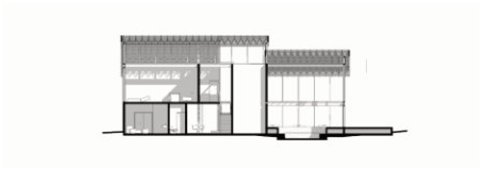
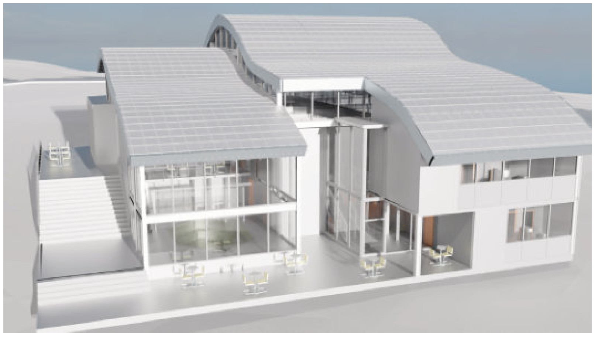
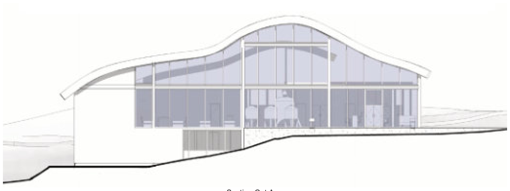
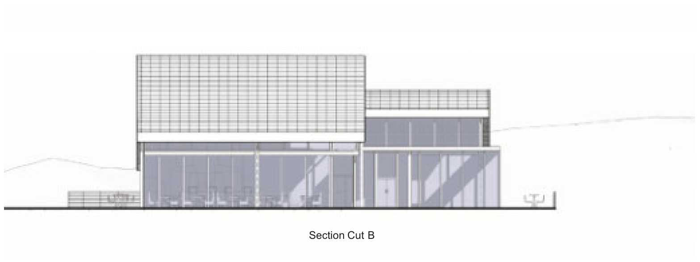
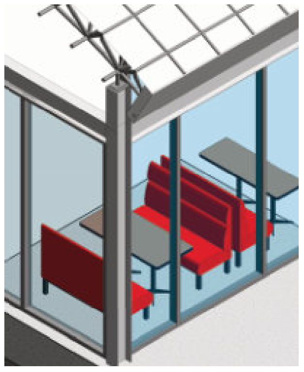
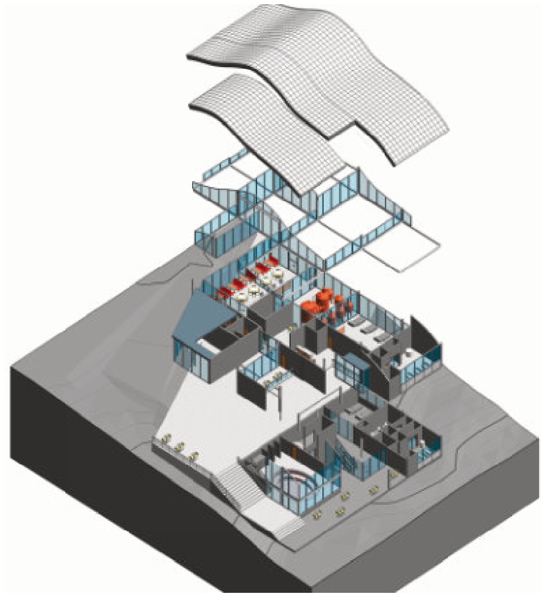